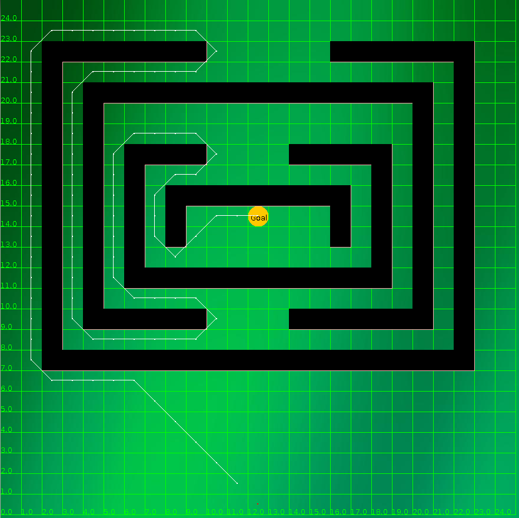
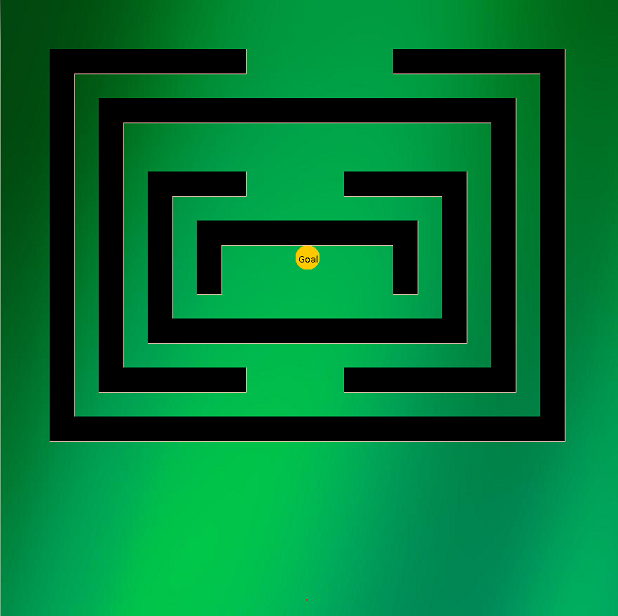
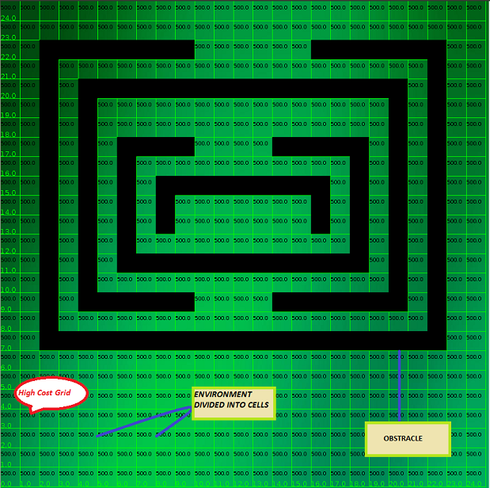
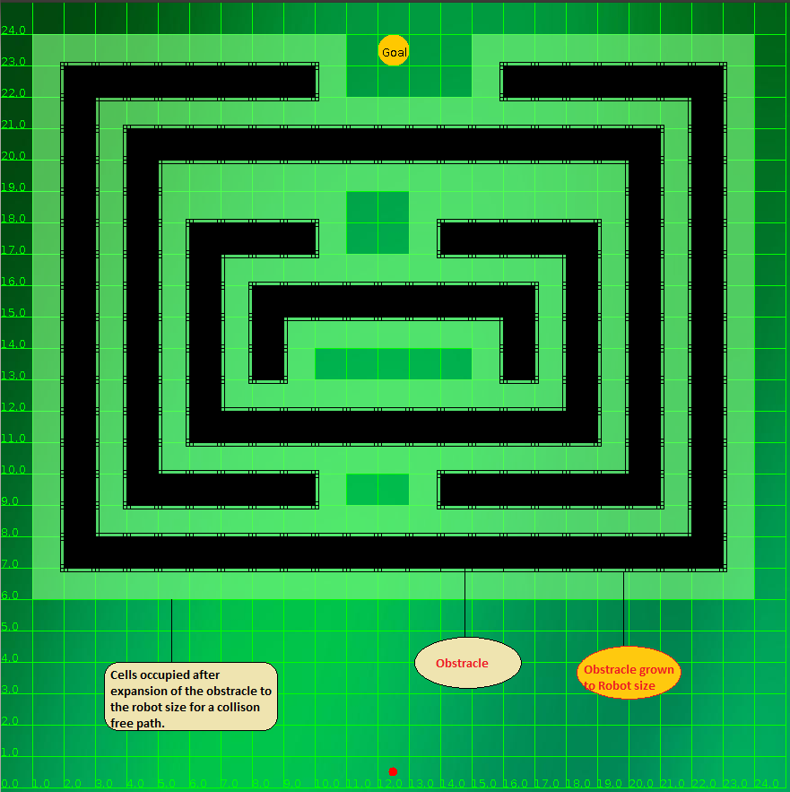
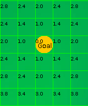
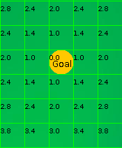
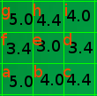
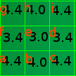

What is path planning?
Path planning as the name suggests is the ability of the robot to plan a collision free path from its current location or configuration to a goal configuration.(See figure below)

What are the main classifications of planning algorithm?
Path planners are broadly classified as follows:
Geometric Planners: Geometric planners compute paths that are collision free. They incorporate the size of the robot while computing collision free paths
Kinematic Planners: Mere geometric plans do not entail their execution since the robot kinematics may not permit them to do so. For example a geometric planner for a car may compute a path that allows for lateral motion of the car as long as it is collision free. However a car cannot move laterally since its kinematics prevent it from doing so.
Dynamic Planners: During motion on rough and uneven terrain the terrain ground interactions play a crucial role in determining the feasibility of a kinematic and geometrically consistent path. Planners that consider the dynamics of the vehicle and plan paths that are dynamically feasible are considered dynamic planners.
What are the prominent geometric planning algorithms?
Geometric planning algorithms have their roots in computational geometry. The popular algorithms include the visibility graph computed over a: Configuration space, The Voronoi diagrams, Cell decomposition methods and Grid based gradient descent methods.

The Environment Model:
The environment consisting of obstracles is represented as a rectangular array of cells. A cell that is occupied is blocked implying that during the later process where the cost of the cell is computed from the goal, these cells would not be considered for computing their costs. All other cells at the start have a very high cost. The figure below shows this
 
Incorporating Robot Size:
To incorporate the size of the robot the obstacles are grown by the radius of the robot. This is shown in figure below. The advantage ofgrowing the obstacles by the size of the robot is that the robot ca now be reduced to a point that allows for simple collision checking while computing the geometric path.

Cost-Grid Propogation:
Computing costs for the goal and its neighbouring cells: The cell that contains the goal location is assigned zero cost. A temporary cost to the eight neighbour cells of the goal cell is computed based on its Euclidean distance from the goal cell, where distances are measured in cell units. In other words the four nearest neighbours are at a distance of one cell unit from the goal and the four diagonal neighbours are at 1.414 cell units from the goal cell. If these temporary costs to the cells are lesser than their original costs then the cells are updated with these costs. The figure below shows the cost of the goal and its neighbours.
Computing costs of non goal cells: From the current cell popped up from the open list (the open list will be explained further below) we consider all its neighbours. The temporary costs to the neighbours arecomputed as before. If the temporary cost of the neighbouring cell added to the cost of the current cell is lesser than the current cost of that neighboring cell its cost is lowered to this lesser cost. In slightly more formal terms, let cost of the current cell, i, popped from the list be ci and the temporary cost to its neighbour j be dij. Then the cost cj of the neighbour j is lowered to ci+dij if ci+dij < cj
The figures on the left and right below show how the costs of cells are updated from a non goal cell popped out of the open list.
 

To illustrate how to use the above equation to make a complete cost-grid map. From the figure below on the left suppose Ci=3.0,Ca=5.0 and dia=1.414. So,Ci+dia < Ca.So, we replace Ca with Ci+dia ie 4.41. Similarly,Cf=3.4,Ci=3.0 and dif=1.0. so here Ci+dif is not less than Cf. So, Cf retains their same value. So, following the above procedure by considering Ci=3.0 we can lower the cost of the neighbouring eight cells. Figure below on the right shows the cost-grid value by considering Ci=3.0.
 
Selecting the next cell from where the costs are to be propagated:
A list open stores the cells whose values have been lowered from their initialized values. The list is sorted with the lowest values at the top of the list that are popped. (Initially the list contains only the goal node)
The process continues till all cells in the grid have been expanded once. The figure below shows the final cost grid for the environment in previous figures. The cell with zero cost is the goal.

Path Computation: Having constructed the equivalent cost grid map from the starting position we move along the direction of the most negative gradient and reach the next cell along that direction. We repeat the above step till goal is reached. The path connects the centers of the cell visited during this gradient descent.

The objective of this VL experiment is to simulate a grid based planner that plans geometrically collision free trajectories incorporating the size of the robot over a cost grid. As far as this experiment is concerned the robots are modelled as a circular disc.

In order to simulate the Experiment, Robot size, Goal and Robot position should be selected using the combo-box provided. Once you click on the 'Initialise' button the obstracle scales according to the size of the robot selected. In Order to run the algorithm, press the 'Run' button. After pressing the 'Run' button, the algorithm finds the path based on the Grid cost value. If any path is possible it draws the obstracle free-path. For getting the complete cost grid of the map, you can press on the 'Cost' button. To run the program again press on 'Reset' button. Different maps can also be selected using 'select map' combo-box.


- For the simple map below and the given goal location, evaluate the final cost grid map for the same. (show a map and the goal location)
- For the same map and for the start location shown below, trace the path based on gradient descent.
- Are the paths found out by the algorithm in this experiment, optimal? Explain suitably your answers.
- What are the possible effects on the obstacle growing operation on the algorithm’s eventual performance in terms of its ability to find paths?

Books
- Probabilistic Robotics by Sebastian Thrun, Wolfram Burgard and Dieter Fox
- Autonomous Robots by Illah Norbhaksh and Roland Siegwart
- Computational Principles of Mobile Robots by Michael Jenkin and Gregory Dudek